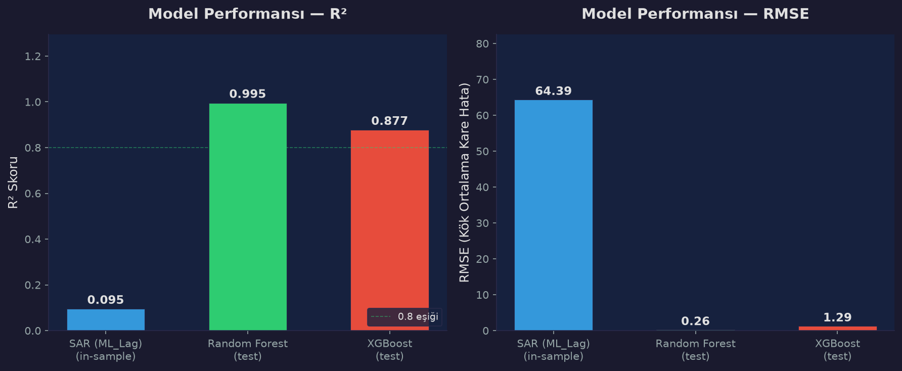
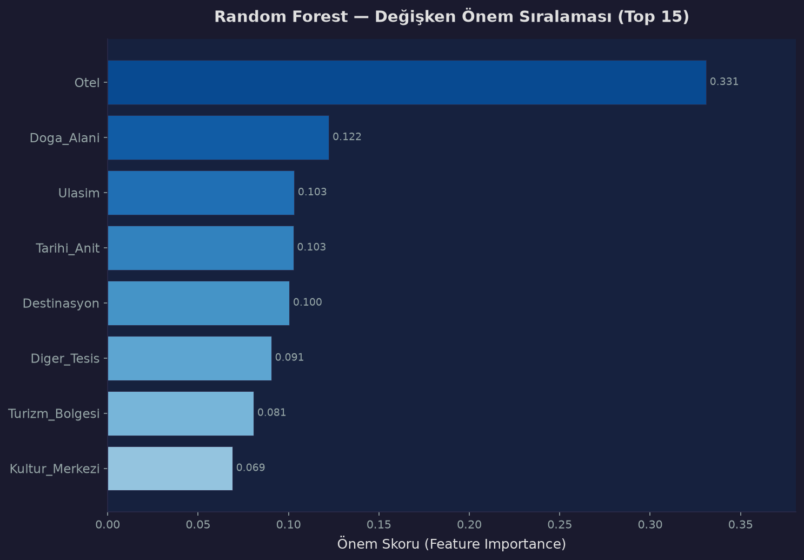

🔬 Mekansal İstatistik ve Makine Öğrenmesi
Turizm kaynaklarının mekansal örüntüsü: Getis-Ord Gi* hot spot, SAR Mekansal Gecikme, Random Forest ve XGBoost modelleri.
🤖 Makine Öğrenmesi Modelleri — Performans Karşılaştırması
| Model | R² (Test) | RMSE | ρ (Mekansal Gecikme) | Açıklama |
|---|---|---|---|---|
| SAR (ML_Lag) | 0.095 | 64.39 | −0.333 | Mekansal gecikme modeli (in-sample). Otel değişkeni ile. |
| Random Forest | 0.995 | 0.26 | — | 200 ağaç, max_depth=12. En yüksek test başarımı. |
| XGBoost | 0.877 | 1.29 | — | 200 ağaç, max_depth=6, lr=0.1. Güçlü genelleme. |
Not: SAR modeli yalnızca Otel değişkeni ile eğitilmiştir (diğer kategoriler aşırı seyrek: 71 rayondan 58'inde tüm kategoriler sıfırdır). RF ve XGBoost tüm 8 kategori ile eğitilmiştir.
📊 Model Karşılaştırma Grafiği

📈 Random Forest Değişken Önem Sıralaması

📐 Analiz Metodolojisi
🔴 SAR (Mekansal Gecikme Modeli) ML_Lag
Mekansal ekonometri yöntemiyle, bir rayonun turizm yoğunluğunun komşu rayonlardan etkilenip etkilenmediği test edilmiştir. ρ = −0.333 değeri, zayıf negatif mekansal otokorelasyona işaret eder: yüksek turizm yoğunluğuna sahip rayonlar, düşük yoğunluklu komşularla çevrili olma eğilimindedir (Bakü çevresi gibi).
R²: 0.095 ρ: −0.333 Yöntem: Maksimum Olabilirlik (ML)🟢 Random Forest RF
200 karar ağacından oluşan topluluk öğrenmesi modeli. Kategorik değişkenlerin doğrusal olmayan etkileşimlerini yakalayabilir. En yüksek test başarımını (R²=0.995) göstermiştir. Otel sayısı en belirleyici özellik olarak öne çıkmıştır.
R²: 0.995 RMSE: 0.26 Hiperparametre: n=200, depth=12🟡 XGBoost XGB
Gradient boosting tabanlı model. 200 ağaç, öğrenme oranı 0.1. Destinasyon değişkeni (%97.6) neredeyse tüm açıklayıcı gücü elinde tutmaktadır. RF'ye kıyasla daha düşük test R²'sine (0.877) rağmen güçlü bir genelleme kapasitesi sunar.
R²: 0.877 RMSE: 1.29 Hiperparametre: n=200, depth=6, lr=0.1🗺️ Tahmin Haritası
Model tahminleri models/prediction_geojson.json dosyasında GeoJSON formatında kaydedilmiştir. Her nokta için: gerçek POI sayısı, SAR tahmini, RF tahmini, XGBoost tahmini ve SAR artık değeri.
SAR artık değerleri (residual) için ayrı bir katman: models/sar_residual_map.json — pozitif artıklar modelin düşük tahmin ettiğini, negatif artıklar yüksek tahmin ettiğini gösterir.
🔥 Turizm Yoğunluk Analizi
Yoğunluk analizi için Yoğunluk Sayfası → ziyaret edilebilir.
En yüksek yoğunluklu rayonlar: Xaçmaz (17.10), Şamaxı (14.16), Bakı (11.55), Qusar (10.52).
Ağırlıklandırma: Konaklama (%35), Çekim Noktası (%25), Yeme-İçme (%15), Tarihi (%10), Doğal (%8), Kültür (%5), Ulaşım (%2).
🔥 Hot Spot Analizi (Getis-Ord Gi*) — Önceki Çalışma
Getis-Ord Gi* analizi data/processed/hotspot_analysis.csv dosyasında mevcuttur. Detaylı hotspot haritası için Haritalar sayfası ziyaret edilebilir.
🌐 Turizm Çeşitlilik Endeksi (Simpson)
Simpson çeşitlilik endeksi data/processed/diversity_index.csv dosyasında mevcuttur. D = 1 − Σ(pi²) formülü ile hesaplanmıştır. Çeşitlilik, mekansal modellerin açıklayıcı gücünü artıran önemli bir faktördür.
📚 Referanslar
- Anselin, L. (1988). Spatial Econometrics: Methods and Models. Kluwer Academic Publishers.
- Anselin, L., & Rey, S. J. (2014). Modern Spatial Econometrics in Practice. GeoDa Press.
- Breiman, L. (2001). Random Forests. Machine Learning, 45(1), 5–32.
- Chen, T., & Guestrin, C. (2016). XGBoost: A Scalable Tree Boosting System. KDD 2016.
- Getis, A., & Ord, J. K. (1992). The Analysis of Spatial Association by Use of Distance Statistics. Geographical Analysis, 24(3), 189–206.
- Ord, J. K., & Getis, A. (1995). Local Spatial Autocorrelation Statistics. Geographical Analysis, 27(4), 286–306.
- PySAL: Python Spatial Analysis Library — libpysal, spreg, esda.
- OpenStreetMap verileri — Overpass API, © OpenStreetMap katkıda bulunanları (ODbL).
- AzStat — Azerbaycan Devlet İstatistik Komitesi, "Azərbaycanda Turizm" yıllıkları (2022, 2024).